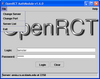

Login:
|
In order to login, the user has to have a valid Login and Password. To connect to a different server than the default one, change the server settings via the File menu by selecting “Change Server” and “Change Port”. Under “Change Server”, you can enter either an IP number (e.g. 169.237.7.207) or a valid DNS name (e.g. amia.cs.ucdavis.edu). The registered default port for OpenRCT is 2250. There are three different user types enumerated as Administrator, Manager, and User. The Administrator account is used in the OpenRCT web based administration tool to setup and to edit all parts of the OpenRCT environment. The Manager account is assigned to users who control courses, teams, and associated users. The User account is the most basic account and is intended for OpenRCT users that are not of type Administrator nor Manger. Within the OpenRCT client environment, only the Manager and User types have distinct capabilities. These different capabilities are outlined in more detail where applicable. |